PHILO-9-03 · the ITEMS section
DRAFT for the owner's ratification. The questions and the measurements: README.md.
0 · Today
No items section; ON TRACK; the milestone 7 days late is not shown.
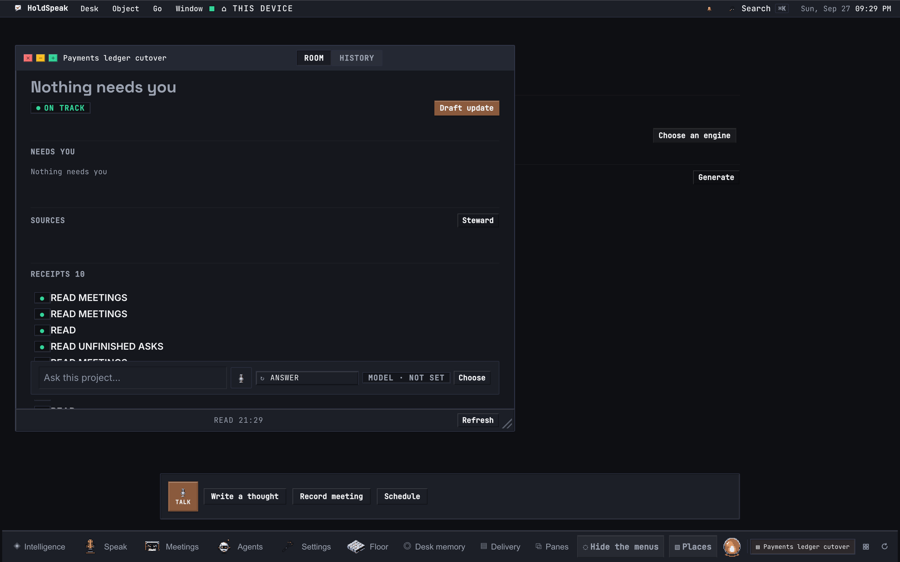
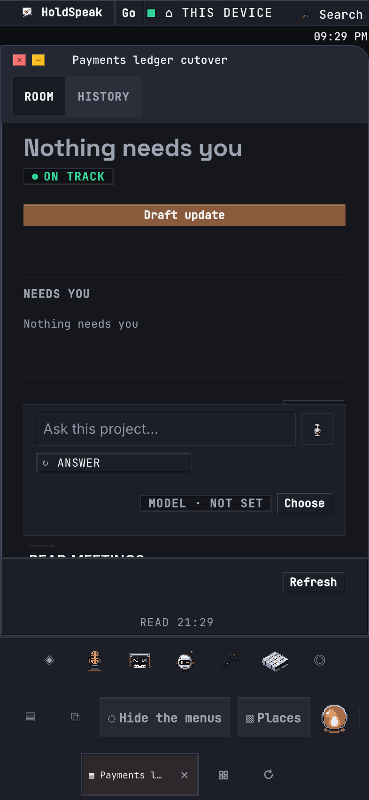
1a · Late, first view
AT RISK + 1 MILESTONE LATE; NEEDS YOU row; ITEMS 3 after NEEDS YOU.
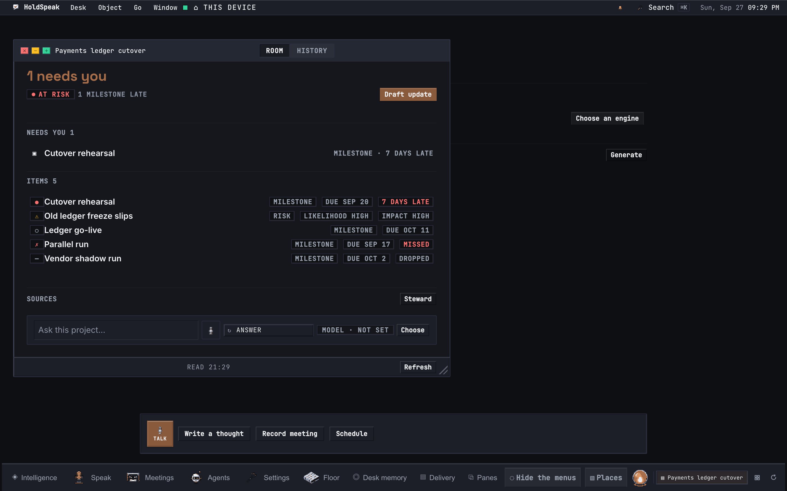
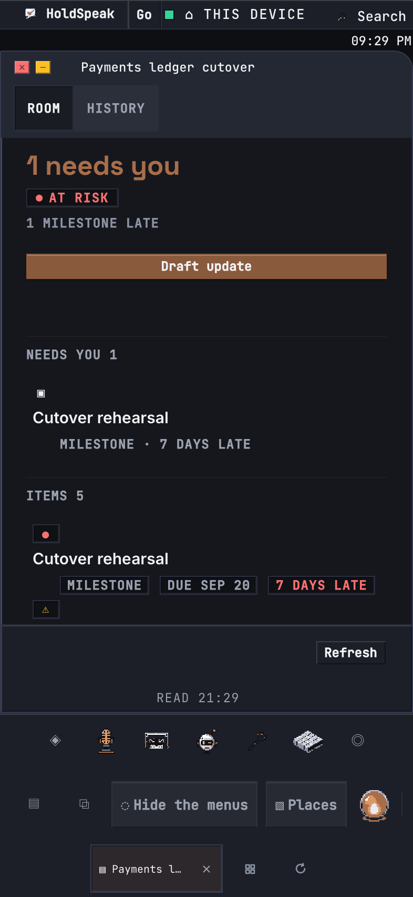
1b · Late, the section
Late first; the open risk; planned; MISSED (failure ✗); DROPPED (idle —). No Add, no row verb.
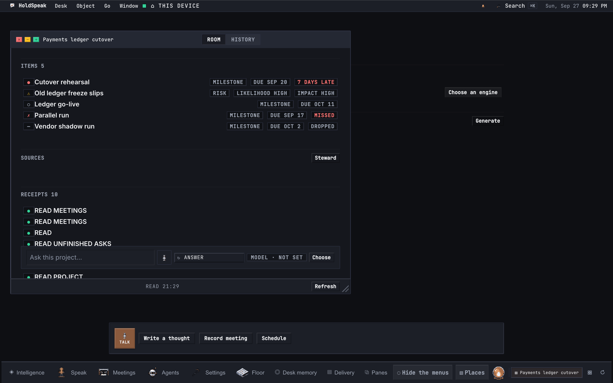
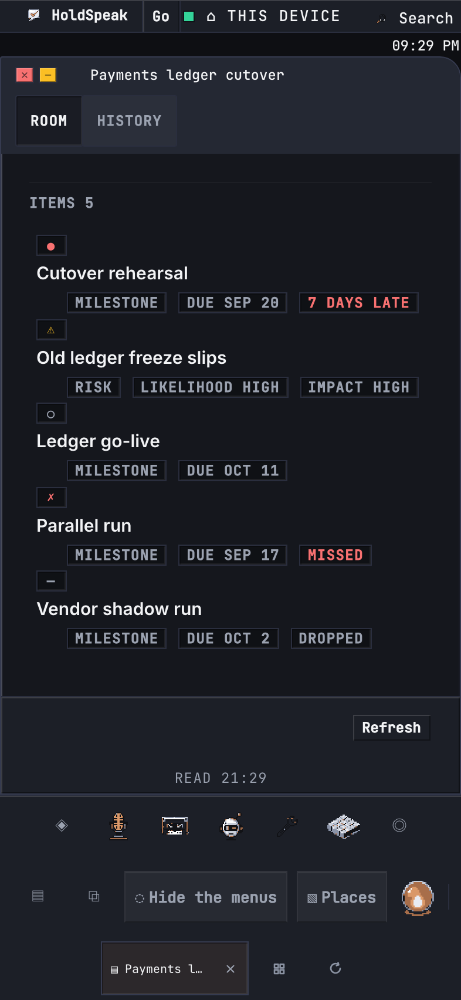
1c · SOURCES in view
At 393 the Ask well is in the flow: it covers no verb and no head (F10).
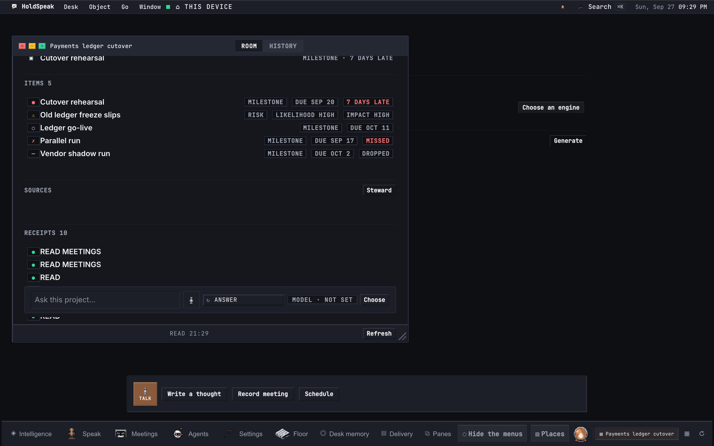
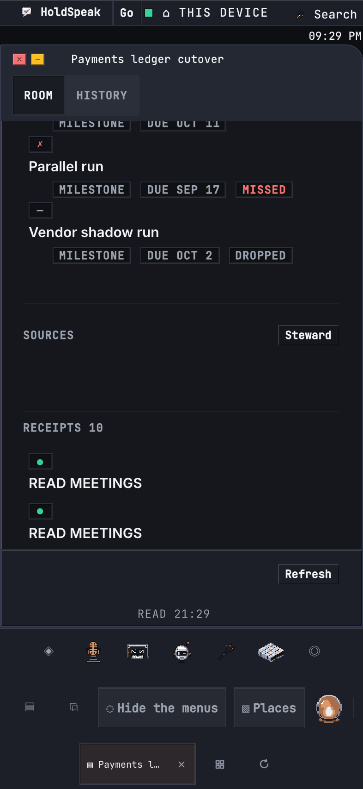
2a · Reached, first view
A real transition to reached: ON TRACK again.
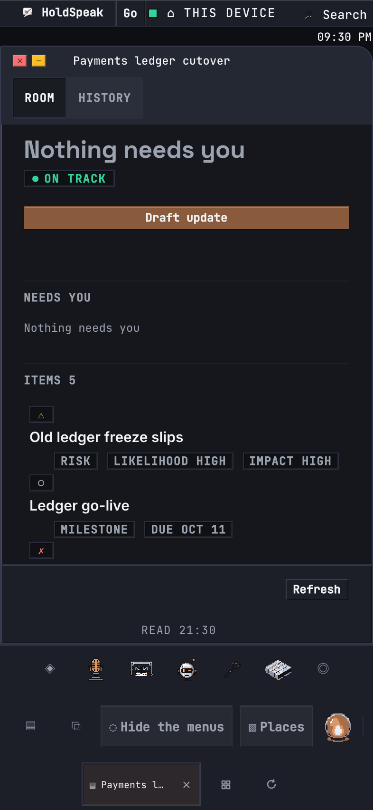
2b · Reached, the section
The reached milestone last, with REACHED.
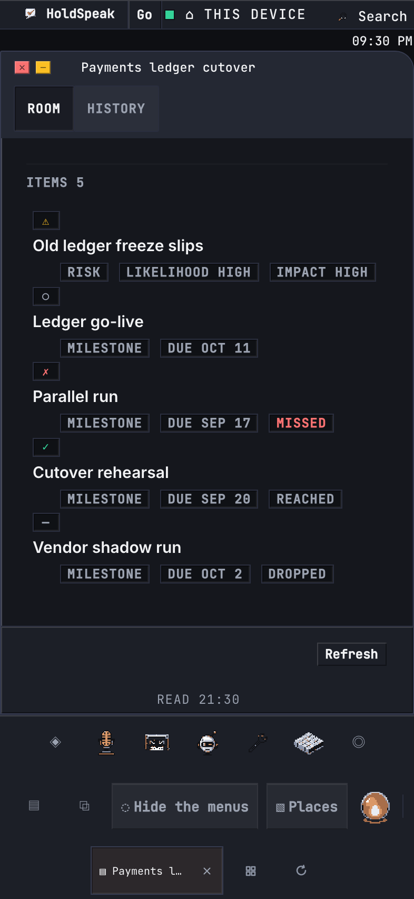
3 · Empty
Zero items: the section is omitted; no counter of zero.
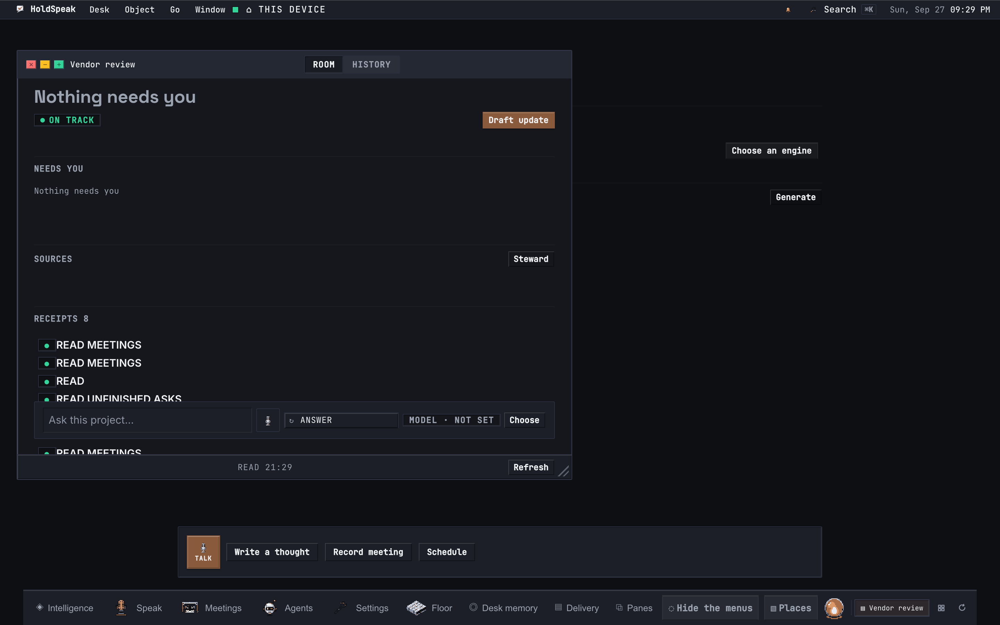
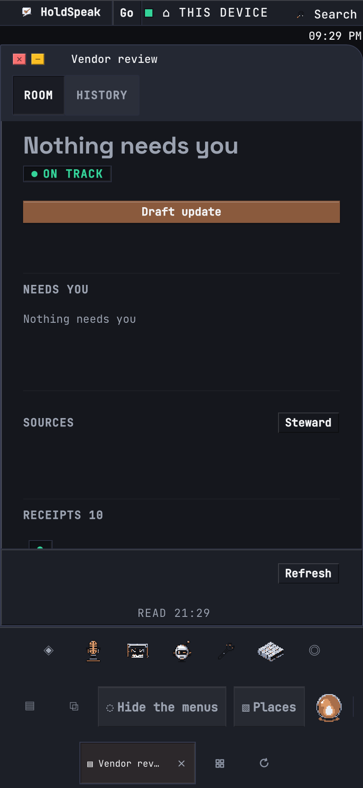
4 · Items read failed
ITEMS UNAVAILABLE with Retry: never drawn as empty.
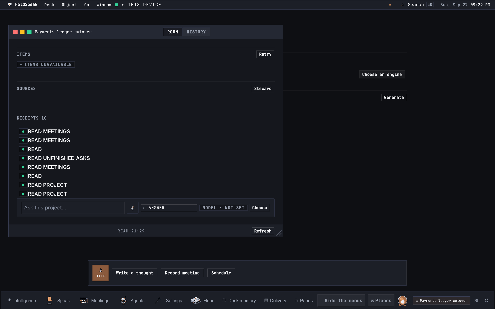
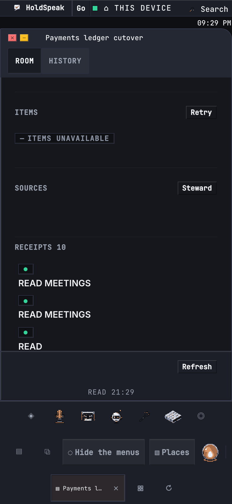